7-4. Distillation of Binary Mixtures->solve the problem
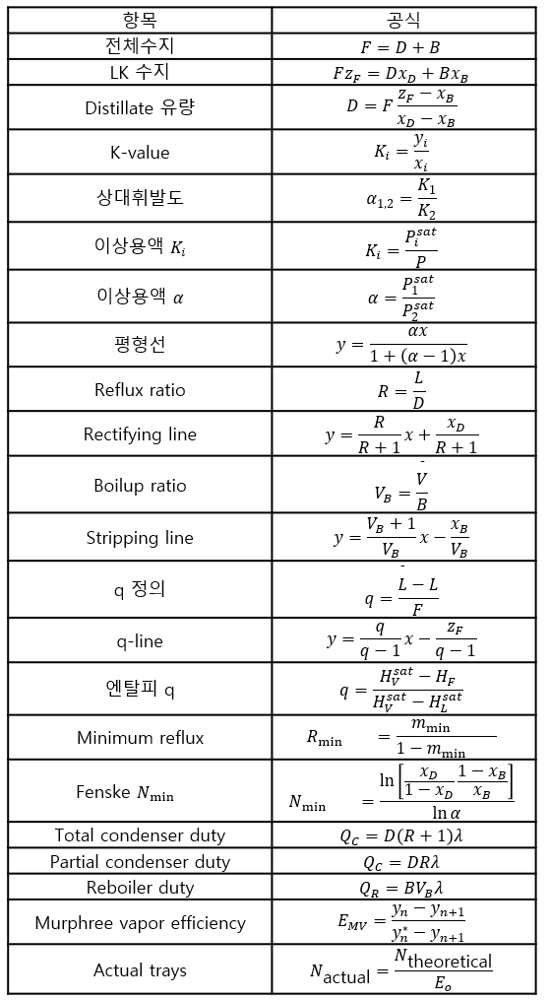 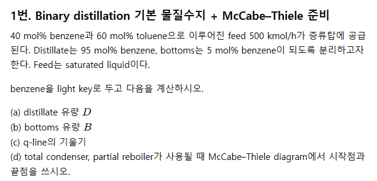
일단 피드는 F=500이고 여기서 벤젠이 주요 LK이다. 따라서 ZF=0.4, XD=0.95, XB=0.05이다.
(a): 물질수지를 세워도 되고, 다음 공식을 써도 된다.
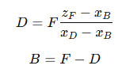
D=194.44, B=305.56이다.
(c)q-line의 기울기는 다음 공식을 통해 구한다.
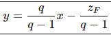
이때 q=1이므로 기울기가 무한대를 향해는 수직선이다.
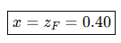
(d) 시작점은 xd,xd이고 끝점은 xb,xb이다.
이때, 파셜리보일러는 단 하나로 센다.
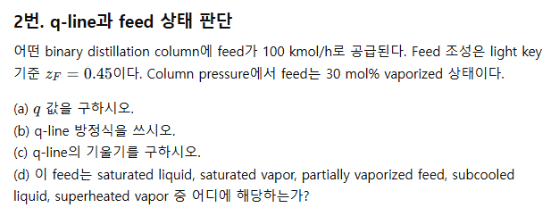
(a) q=L/F이므로 0.70이다
(b)
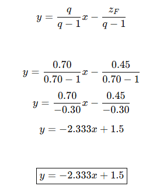
(c)기울기는 -2.333이다.
(d) partially vaporized feed에 해당한다.
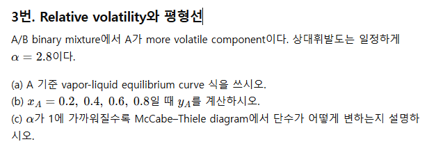
평형선 식은 y=ax/1+(a-1)x 이다. 따라서
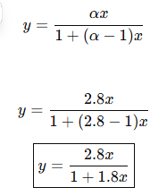
이제 이 식에 x=0.2,0.4,0.6,0.8을 대입하면 된다.
| 0.2 | 0.412 |
| 0.4 | 0.651 |
| 0.6 | 0.808 |
| 0.8 | 0.918 |
만약 상대휘발도가 1에 가까워지면 그건 분리의 driving force가 없으며 y=x에 가까워진다. 이는 증류로 못가름을 의미한다.
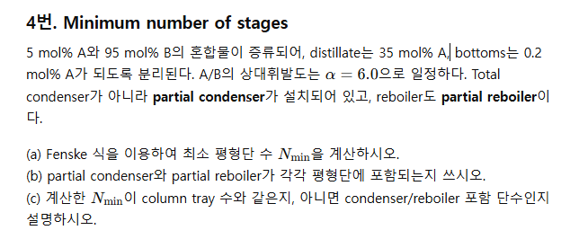
A+B혼합물에서 A가 LK이다. Fenske식을 이용해 최소평형단을 구해야 한다.
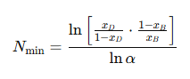 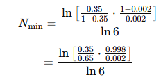
=3.12가 된다. 따라서 총 4스테이지 정도가 있다. 이때 파셜 콘덴서와 리보일러는 단수에 포함이 되므로 실제 단은 1~2단이다.
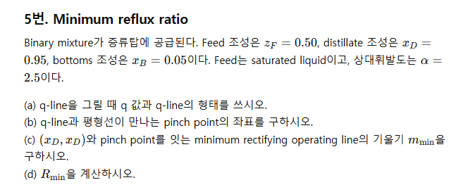
2단 믹스처가 증류탑에 공급되는데 목표 조성이 다 정해졌다.
a: q=L/F=1이며 따라서 수직선의 형태를 가진다. 이때 X=0.5이다.
b:
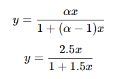 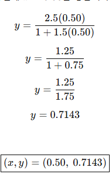
c:0.524
d:1.10
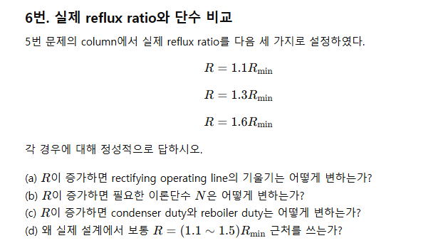
일단 상부조작선에서 기울기는 R/R+1이므로 R이 증가할 수록 1에 가까워지며, R이 감소할 수록 수평=0에 가까워진다. 즉 R이 증가할 수록 기울기 자체는 증가한다고 볼 수 있다. R이 커지면 조작선이 대각선에 가까워진다.
(b)이론단수는 감소한다.
(c) 듀티의 경우 다음과 같다.
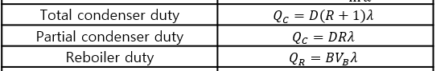
따라서 일단 R이 증가하면 콘덴서 듀티는 증가하는 것이 맞다. 문제는 리보일러인데, 환류를 많이 해준다는 것은 Reboiler도 내부 vapor flow를 더 많이 만들어야하므로 듀티는 둘다 증가한다.
(d): 최소환류시 단수가 무한정이기 때문에 안되며, 환류를 전환류로 해버리면 듀티가 너무 커져서 비효율적이다.
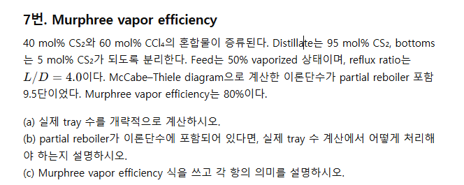
(a) 이론단수가 9.5이고 효율이 80%이다. 이때 머프리 효율은 리보일러에는 안쓰므로 총 트레이 수는 8.5이며
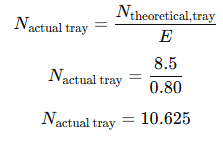 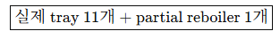
이때 머프리 식은 다음과 같다.
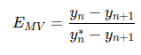
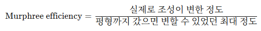
근데 사실 이 문제는 애매하다.. 만약 머프리 효율이 80%라면 실제 조작선->평형선 루트의 80%만 간다는 뜻이다.
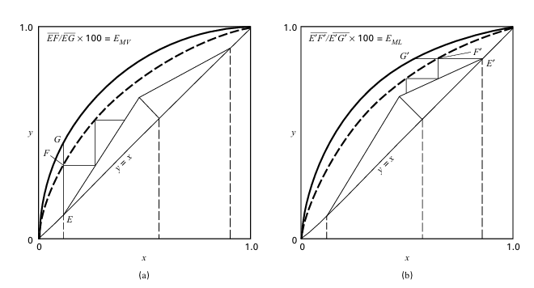
이런식으로 조->평 라인이 바뀌는 것이다.
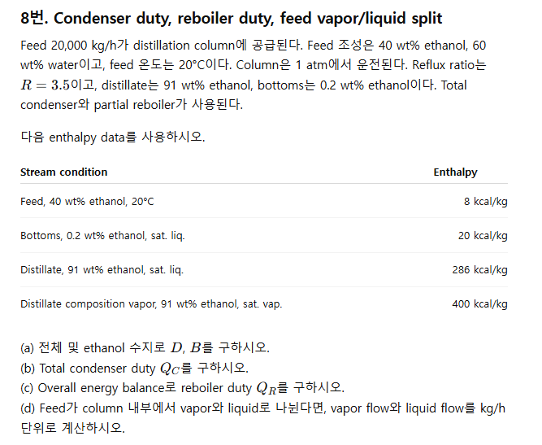
피드가 20000이 증류탑에 공급된다. 이때 조성 조건이 주어졌다. 토탈콘덴서와 파셜리보일러가 사용되었다. 피드 온도와 압력조건도 주어졌다. 이때 엔탈피 데이터가 주어졌다.
(a) D,B구하기:
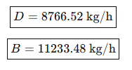
(b)일단 토탈 콘덴서이므로,
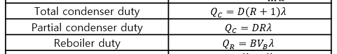
QC= D(R+1)잠열의 형태이다. 8766.52*4.5*(400-286)
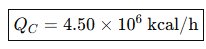
일단 이렇게 되고, 이때 QR은 BVB*잠열이다. B는 아직 모른다.. 따라서 에너지 수지에서 구하는 수밖에 없다.
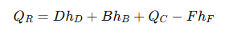 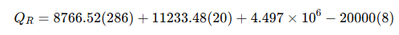
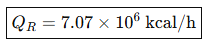
주의! 다음 공식을 꼭 기억해두자.
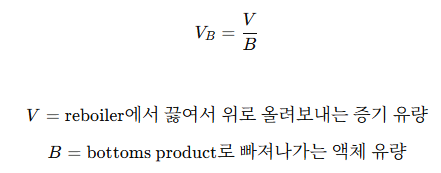
(d): 피드 20000이 공급되기 때문에, 다 합치면 D+B=20000이다. 하지만 V와 L은 다르다. L=RD이며 따라서
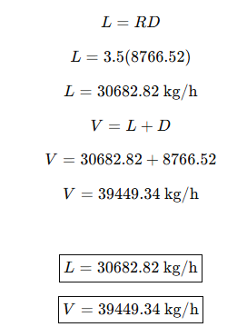
이 문제는 매우 중요하다. 다음 그림을 기억해두자.
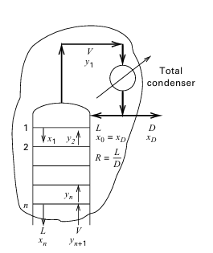
R,D 와 V,L은 다른것이다.
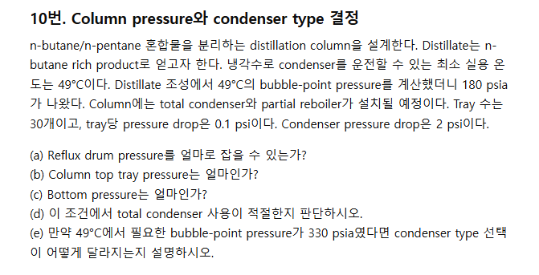
증류탑 설계인데, 콘덴서에 쓸 수 있는 온도가 49도라고 한다. 이때 냉각 가능 압력을 계산했더니 180프사이였다. 컬럼에는 토탈콘덴서와 파셜리보일러 설치 예정이고 트레이 수는 30개이며 개당 0,1 프사이의 압력강하가 발생한다. 콘덴서 토탈 프레슈어 드랍은 2프사이이다.
(a) 일단 리플럭스 드럼이 180프사이인데, 이는 콘덴서를 지난 액체가 모이는 곳이다. 이때 콘덴서에서 2만큼의 압력강하가 있기 때문에 콘덴서에 들어가기 전 탑 트레이의 압력은 다음과 같아야 한다.
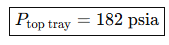
이제 아래로 내려갈 수록 압력이 증가하게 된다. 30단이 있기에 맨 밑에서는 182+0.1*30=185프사이의 압력이 있다. 적절한지는 뭐 가격으로 판단하는데 이건 가격에 대한 정보가 없다보니 될거같긴하다. 만약 49도에서 필요한 압력이 330이면 좀 적절하지 않을 수 있으며 이때는 일부만 액화하는 파셜콘덴서를 사용해야한다.